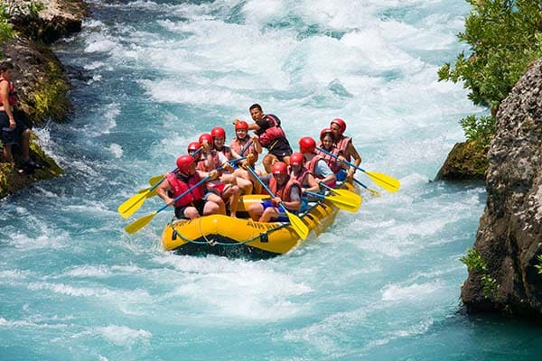
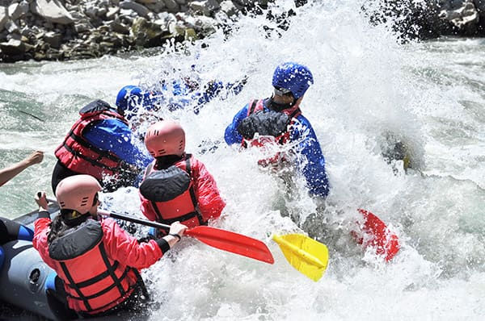

Fabulous Rafts
Welcome to Fabulous Rafts, your premier destination for thrilling rafting adventures and breathtaking treks in the heart of Nigeria. Our company is dedicated to providing unforgettable experiences that connect you with nature and challenge your spirit of adventure.
History
Founded in 2020, Fabulous Rafts has quickly become a leader in adventure tourism in Nigeria. Our team of experienced guides and outdoor enthusiasts is passionate about sharing the beauty of our landscapes and the thrill of rafting with adventurers from around the world.
We offer a range of rafting trips suitable for all skill levels, from beginners to seasoned rafters. Our trips take you through some of the most stunning rivers and landscapes in Nigeria, providing an exhilarating experience that combines excitement with the beauty of nature.
Adventure Awaits You!